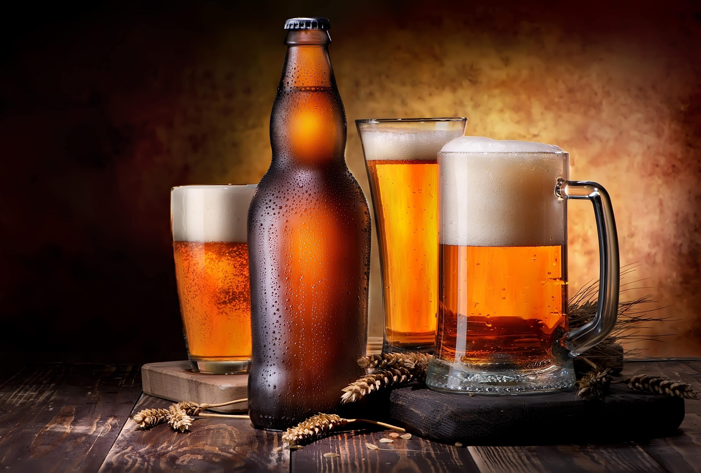
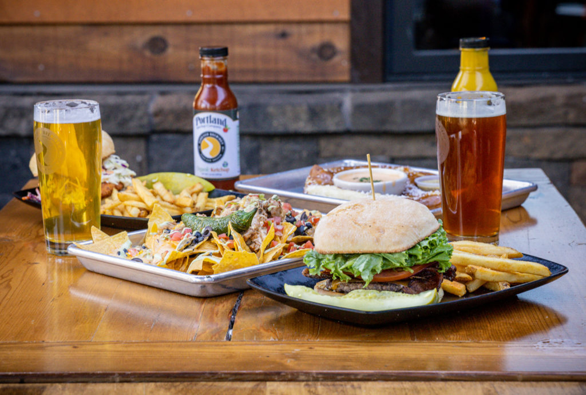
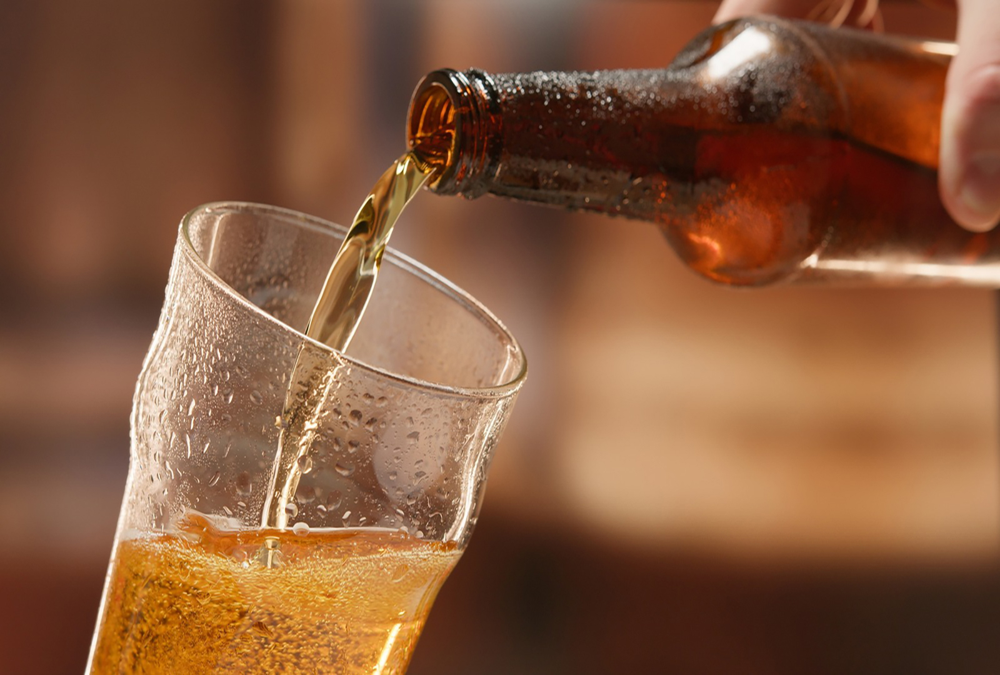
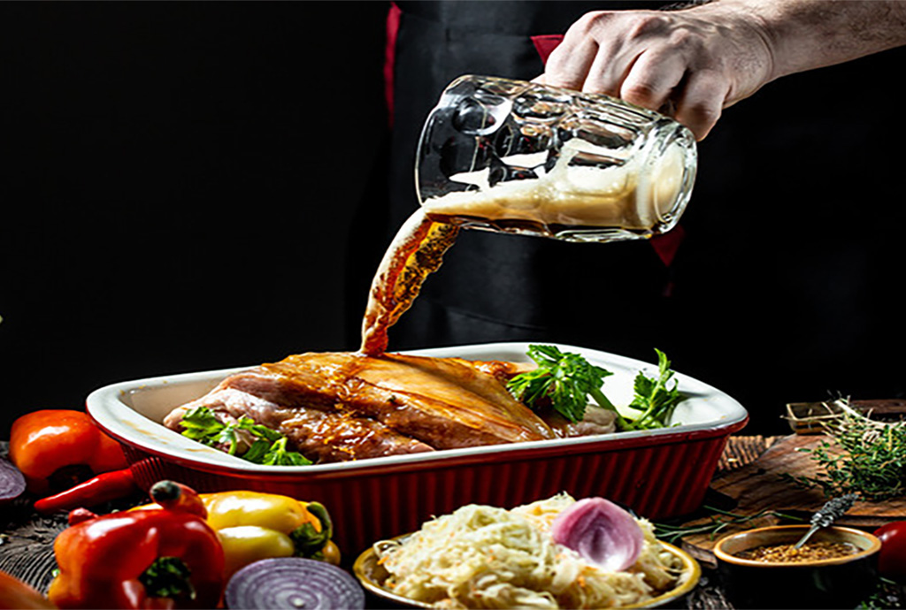
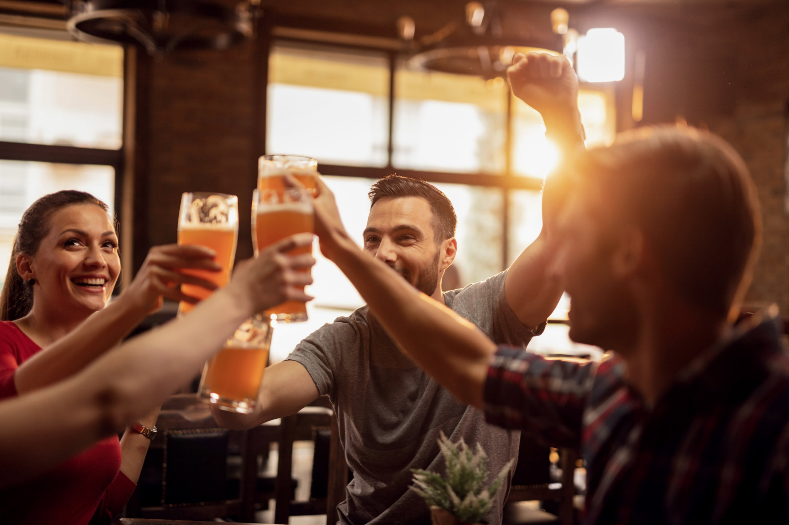
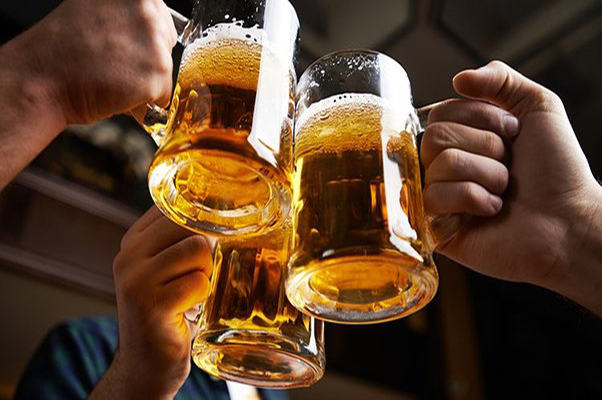
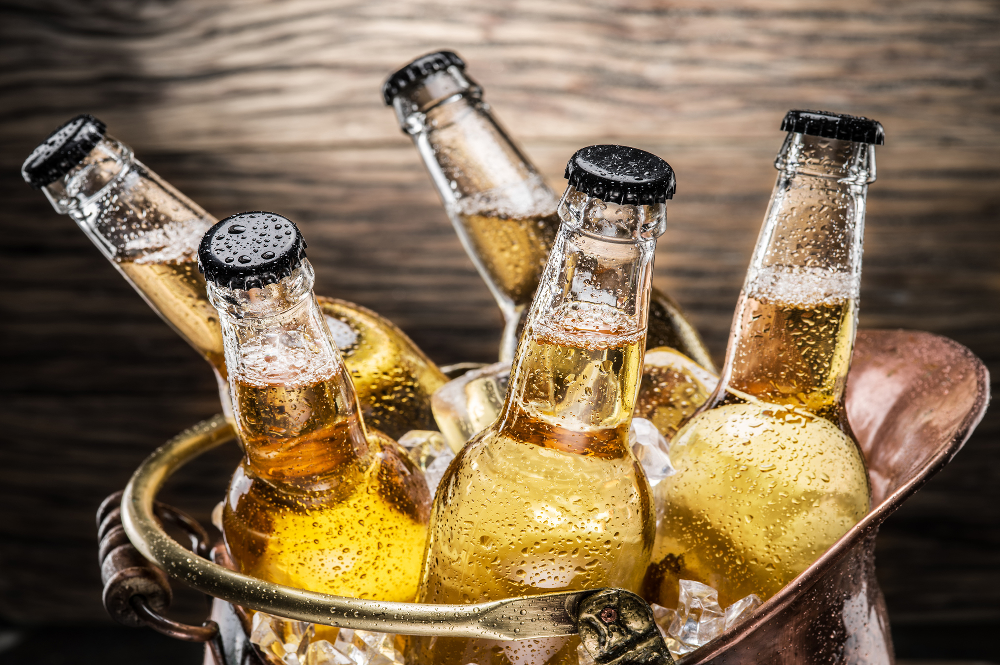

Beer is best served cold when you are seeking for a chilly drink.

It is typical to enjoy a glass of beer with dishes such as burgers and fries.

A nice glass of ale is good for the health.

Beer is useful when cooking meals that need extra flavors.

It is typical to grab beers at a bar with your closest friends.

Cheers is a common toast especially in the United States.Wines are also commonly ordered alongside a glass of beer.

Most people enjoy beers when they have stayed in a cooler for a while.